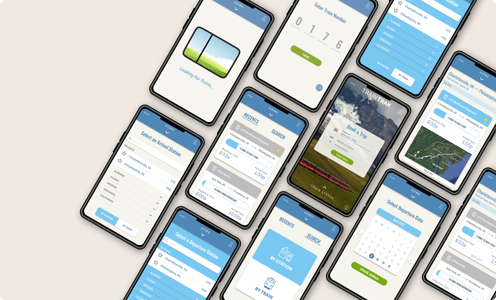
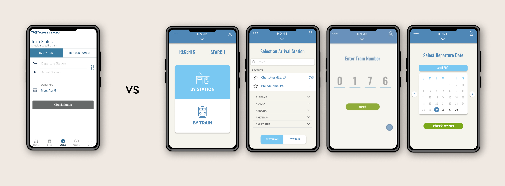
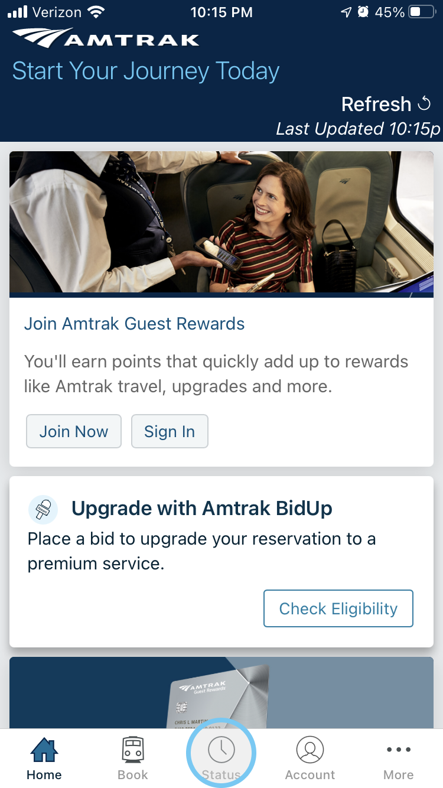
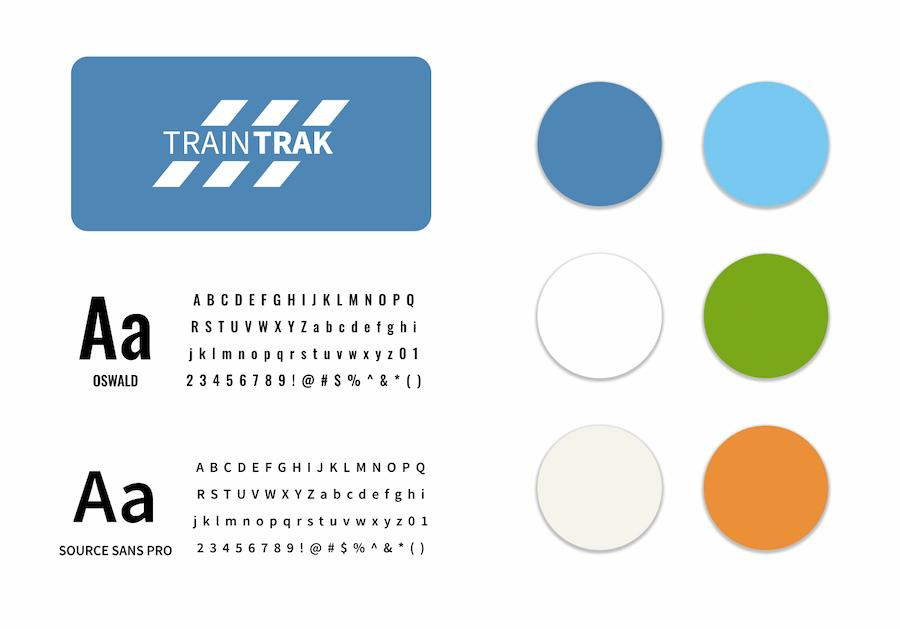

TRAINTRAK

Redesigning & animating microinteractions for the Amtrak app to
create a more efficient and delightful experience for travelers.
PROJECT INFO
- Project for Microinteractions Class
- Solo Work
- April 2021 - June 2021
ROLES & RESPONSIBILITIES
- Creating Taskflows, Userflows, and Wireflows
- Rebranding
- Ideating & Iterating New Microinteractions
- Animating High-Fidelity Interactions
TOOLS USED
- Procreate
- Figma
- Adobe After Effects
overview
Amtrak is a passenger railroad service that provides transportation all across the United States. The app provides users their needed travel information including mobile ticketing, real-time status updates, and account information in order to ensure an efficient and safe trip.the problem
The main issue with the Amtrak app is its frustrating and inefficient process for users looking to quickly check their train status. The design of the app lacks a signature style and its microinteractions are dry and unexciting.goal
To create a more efficient and delightful experience for Amtrak travelers by designing signature features and reorganizing the task flow.constraints
Microinteractions and designs must align with Amtrak's identity as a whole: train travel that is trustworthy and enjoyable.solution
Final high-fidelity animation of the interaction after rendering through Adobe After Effects:New UI & Rebranding
 By breaking up the original form into a step-by-step process,
users can focus on one thing at a time

How do these microinteractions improve the overall User Experience?
The initial “swipe up” action to immediately view your
recent searches allows for quick access to important information, instead
of trying to find the icon to tap on.

before
after
Giving a sense of control to the users & preventing
possible user error.
Providing confirmation feedback to give a feeling of
certainty to the users throughout the process.
Loading screen with train window connects back to Amtrak's identity: the experience of train travel
the process
User Profile
Janet is a 30 year old remote business woman. Her job requires her to come into the office every other week, which is 2 hours away from her house. Because she is a busy lady, taking a train makes more sense for her as she can continue to do work while in transit.NEEDS:
- To be on time to work
- A way to check on her train and ticket information
PAIN POINTS:
- She can't be on her phone for too long
- Has trouble remembering small details
Creating a Task Flow for Amtrak
When putting together a task flow of the current Train Status search, there were 2 main questions I started to think about:- What are some high level steps the user takes to navigate through the Train Status search?
- What are some areas where microinteractions can be included to fulfill user needs and alleviate user pain points?
Rebranding (Amtrak to Traintrak)
For copyright purposes, I rebranded the Amtrak App and used a different name, theme, logo etc. I still made sure to include the core elements of Amtrak's identity to achieve my original goal. For the color, I stuck with the same basic color palette that was originally put in place. Amtrak's main color, blue, gives the users a feeling of trust and reliability which is essential for a travel app.